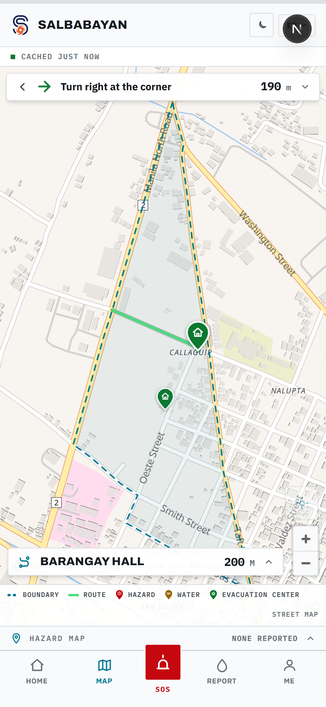
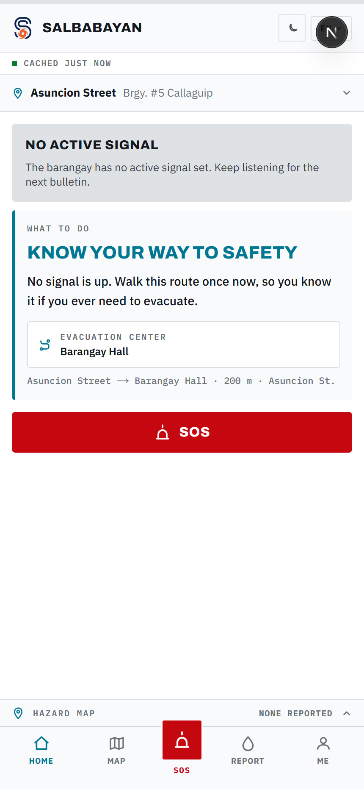
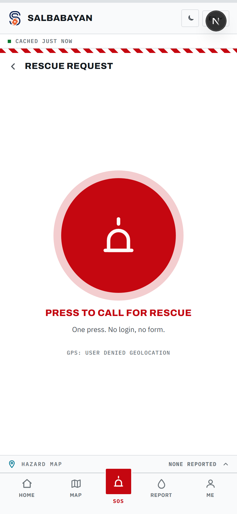
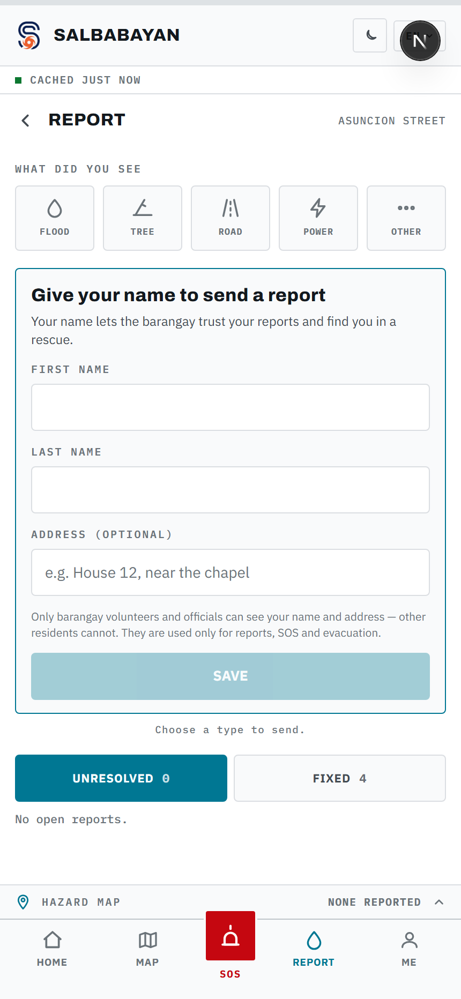
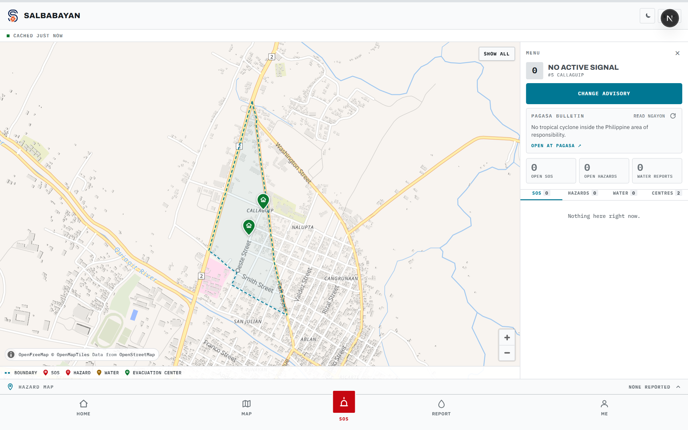

Barangay #5 Callaguip · Batac City · Ilocos Norte
A flood and storm warning app for one barangay — built to keep working when the mobile network does not.
MVP live at salba-bayan.vercel.app · September 2026
01The problem
A barangay's storm warning travels by megaphone, text message and group chat. All three fail in the same hour: the towers saturate, the power goes, and the people who most need to move are the ones who hear nothing.
Do not know the current signal, which centre is nearest, or whether the road there is passable.
Take rescue calls by phone and radio, with no shared list and no way to see who is already going.
Have no live picture of their own barangay — which streets are flooded, how deep, or how many are in the hall.
The approach
Every other design decision in SalbaBayan follows from one: nothing a person does in a storm may depend on a working connection, and nothing on the screen may claim to be current when it is not.
An SOS, a report, a headcount is saved on the phone in milliseconds and sent when the network returns. The tap never waits on a tower.
The barangay's streets, outline, routes and wording are cached. With no signal the app draws its own map and routes on it.
"Cached 2 hours ago" is on screen wherever it is true. A cache that forges freshness is worse than no cache at all.
What a resident gets
No account, no email address, no telephone number. The app opens as a resident of this barangay the moment it loads.

The resident's app



Flood depth is reported against the body — knee, waist, chest, above head — because nobody in a storm is estimating centimetres.
05Rescue
The resident presses once. The call is timed from the press, even with no signal, and sent the moment there is one.
Any volunteer acknowledges it. The resident's screen changes to SEEN BY THE BARANGAY with the waiting time.
Each responder gets their own walking route from where they are. Several may take the same call; none sees another's line.
Marking it closes the call for everyone and clears the route from every phone that was going.
The official's dashboard

Tap a street to place a hazard, a flood depth or an evacuation centre · the advisory and the PAGASA bulletin sit together in the sidebar · every open SOS, hazard and reading is on the map.
07PAGASA
PAGASA publishes no API, so the dashboard reads the tropical cyclone bulletin itself and works out which wind signal covers this barangay — then fills the advisory form on request.
PAGASA's signal covers a province. The barangay's signal is a decision about this barangay, made by someone who knows which streets flood first and how long it takes to walk out of them.
A misread bulletin is then a wrong suggestion on one screen — never a wrong signal on every phone in the barangay.
Trust
| Rule | How it is actually enforced |
|---|---|
| Roles are granted | A phone is a resident until an official grants it more, by device code. Nobody can promote themselves — the function that once allowed it is gone. |
| Official pages | A 4-digit PIN each session, on top of the role. A phone that is not an official in the database cannot open them whatever it types. |
| Names | Visible to volunteers and officials only, never to other residents. The SOS button never asks for one. |
| Every read and write | Row-level security in Postgres, checked by a suite that runs against the live database on every build — not by the app being polite. |
| Flood readings | Only officials may clear or overwrite one, so the map cannot be quietly emptied by a passer-by. |
Where it stands
432
Automated checks, every build
41
Of those against live database security
40
Languages offered · 3 written by people
832
Residents in the barangay it is built for
Deliverables
Open the MVP on a phone, turn airplane mode on, and reload it.
That is the whole argument.
SalbaBayan · Barangay #5 Callaguip, Batac City, Ilocos Norte · base map © OpenStreetMap contributors, via OpenFreeMap · bulletin data from PAGASA
11